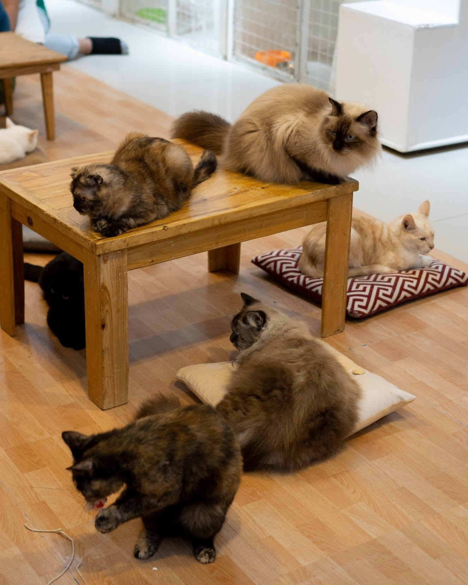

LAS PIÑAS CITY · SOUTH PIONEER
Le Cat Coffee Shop
Le Cat Coffee Shop is remembered as a pioneering southern cat café with a separate café and cat-lounge setup. Past visitors praised its friendly cats, coffee, pastries, and family-friendly atmosphere, making it sound like a relaxing first cat-café experience. I keep it in the guide for its place in local café history, but its address and reviews are historical, so visitors must verify its current status before traveling.
| Historical address | 76 Gloria Diaz Street, BF Resort Village, Las Piñas City |
|---|---|
| Operating status | Archive listing—verify before making plans. |
| Historical rating | 4 / 5 from a past visitor review |
| Remembered for | Family visits, friendly cats, coffee, and pastries |